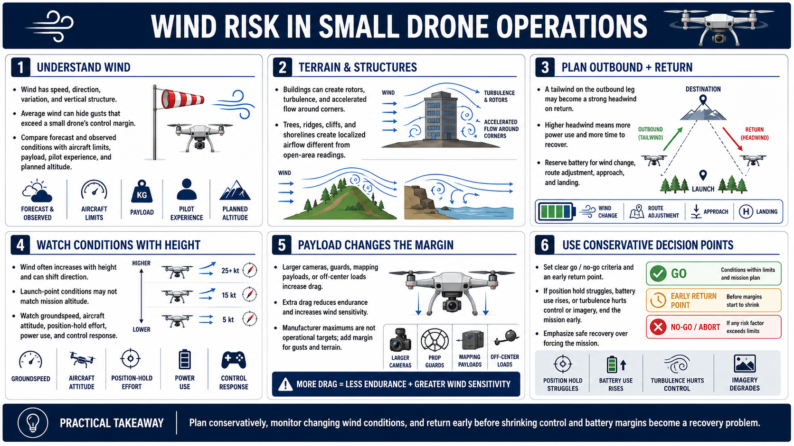

Wind and Air Movement
Connecting to LMS... Progress: in progress

Narration
Wind has speed, direction, variation, and vertical structure. Average wind alone can hide gusts that briefly exceed a small drone's control margin. Compare forecast and observed conditions with manufacturer guidance, payload effects, operator experience, and planned altitude.
Structures and terrain disturb airflow. Buildings can create rotors, downwash, acceleration around corners, and turbulence on the downwind side. Trees, ridges, cliffs, and shorelines can produce localized movement that differs from an open-area reading.
Plan the outbound and return legs together. A favorable tailwind leaving the site may become a strong headwind during return, increasing power use and time. Reserve battery for wind change, route adjustment, approach, and landing.
Wind normally increases with height and can shift direction. Conditions at the launch point may not describe the mission altitude. Watch groundspeed, aircraft attitude, position-hold effort, power use, and control response for signs that margins are narrowing.
Payloads change wind sensitivity. A larger camera, guard, mapping attachment, or unusual center of gravity can increase drag and reduce endurance. Manufacturer maximums are not operational targets; terrain, gusts, and mission complexity justify additional margin.
Use conservative go or no-go criteria and an early return point. If the aircraft struggles to hold position, battery use rises unexpectedly, or turbulence degrades control or imagery, end the mission before recovery becomes difficult.